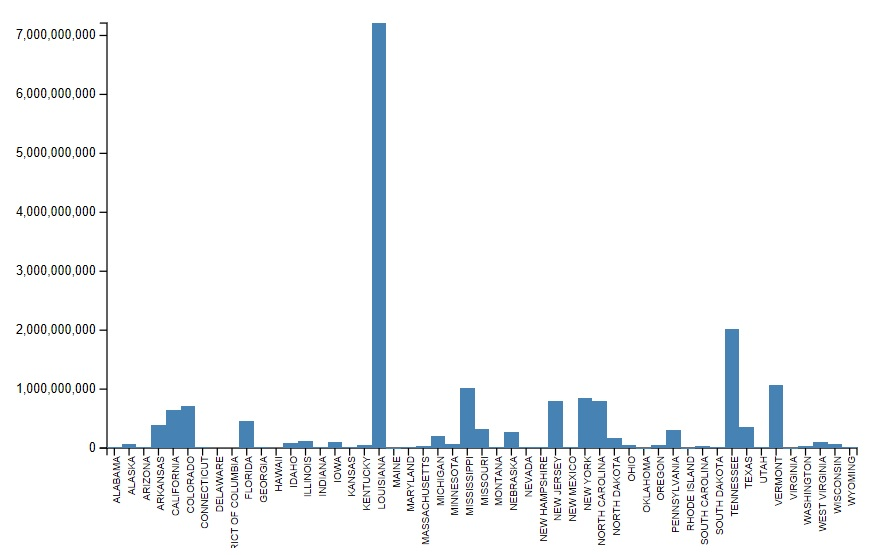

Everyone deals with storms at some point or another. So, some expanded knowledge about them is always a benefit. Although storms cannot be prevented, being storm ready can help communities minimize their loses.
Our project fetches the exploratory data from Storm Events Database published by National Weather Service(NWS) and analyzeses the damage occurred and precautions to be taken based on the intensity and frequency of storms. We are showing the obtained results in the form of various graphs and techniques like donut pie chart, heat map, bar graph etc.,
A heat map is a two-dimensional representation of data in which values are represented by colors. Here we are representing the states of US in the form of heat map where the state with higher number of storms are represented with a color having high intensity and the states with least number of storms are represented with a color having least intensity.
Almost every state in the US is effected by storms. But there are few storms like tornadoes where the impact is high which leads to injuries, deaths of people and creates lot of damages to property and crops. The damage caused by tornadoes vary with its intensity where a tornado with severity EF0 causes light damage and a tornado with severity EF5 causes Incredible damage.
From this, it is understood that though the number of tornadoes in a particular state is high, the precautionary measures to be taken is dependant on the intensity and severity of storm. The Donut Pie Chart shows the top 5 states with more number of tornadoes for each intensity level - EF0, EF1, EF2, EF3, EF4 and EF5.
Also, though the number of storms in a particular state is high, they might not incur any harm to the people. So, it is important to know whether the storms occurring in a particular state causes any harm and appropriate measures have to be taken to safegaurd people. The Interactive Bar Chart compares the deaths caused due to different types of storms in each state and helps the weather service forecast officer to identify states which are to be taken appropriate precautionary measures.
